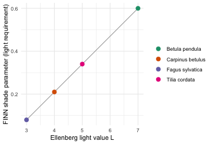
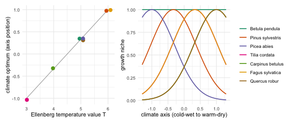
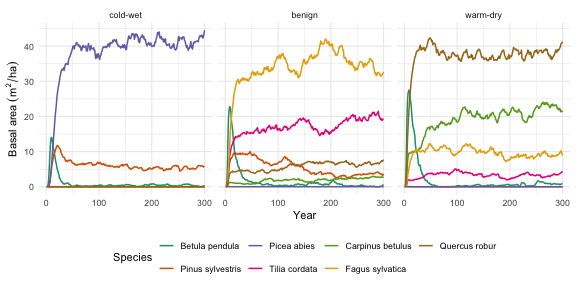

Parameterising FINN from Ellenberg indicator values
Source:vignettes/B-Succession_demo.Rmd
B-Succession_demo.RmdFINN simulates forest succession as the interplay of regeneration, growth, mortality and competition as ecological processes. Here we give it four species with contrasting life-history strategies derived from Ellenberg values and let it simulate succession from bare ground to show that FINN provides that structure to translate Ellenberg indicator values into a plausible succession trajectory. This is the traditional way of dynamic forest modeling introduced by Botkin et al. (1972). No data, no fitting.
library(FINN)
library(data.table)
library(ggplot2)
FINN.seed(1234)
Ntimesteps <- 300
Nsites <- 1
Nsp <- 4 # pioneer -> early-mid -> mid-late -> climax
patch_size <- 0.1The species and their trade-offs
We use four well-known European tree species along a life-history gradient, from the fast, light-demanding pioneer Betula pendula (silver birch) to the slow, shade-tolerant climax Fagus sylvatica (beech), with Tilia cordata (small-leaved lime) and Carpinus betulus (hornbeam) in between. Every parameter below specifies one end of a trade-off along this gradient.
A key species property in forest succession is shade tolerance (the
shade parameter, parGrowth[,1] and
parReg). In FINN this is the fraction of light a species
needs to grow and regenerate. A high value therefore
means light-demanding (a pioneer that needs open ground) and a
low value means shade-tolerant (a climax
species that establishes under a closed canopy). We derive it from each
species’ Ellenberg light-indicator value L rescaled into a range that is
compatible with FINN. Ellenberg L describes a species’ realised light
niche, which we use here as a convenient proxy for shade tolerance
(Ellenberg et al. 1991; for a more rigorous, continuous shade-tolerance
scale see Niinemets and Valladares 2006).
# Four well-known European species along a light-tolerance gradient. Each has an
# Ellenberg light-indicator value L (1 = deep shade ... 9 = full light); we
# rescale L into the shade parameter so shade tolerance comes from the indicator value
species <- c("Betula pendula", "Tilia cordata", "Carpinus betulus", "Fagus sylvatica")
ellenberg_L <- c(7, 5, 4, 3) # birch (pioneer) ... beech (climax)
# shade = light fraction a species needs to grow / regenerate.
# high -> light-demanding (birch); low -> shade-tolerant (beech)
shadeSP <- 0.08 + (0.60 - 0.08) *
(ellenberg_L - min(ellenberg_L)) / (max(ellenberg_L) - min(ellenberg_L))
# -> 0.60 birch, 0.34 lime, 0.21 hornbeam, 0.08 beech
# Only `shade` is read from an indicator value. The parameters below are not from
# Ellenberg: they are illustrative life-history values, each encoding one
# pioneer <-> climax trade-off (fast, short-lived, prolific vs slow, long-lived,
# sparse). The comments give the reasoning; the exact magnitudes are not critical.
# --- regeneration ----------------------------------------------------------
# reg light threshold = shade tolerance; the intercept is relative seed rain,
# higher for the pioneer (many small wind seeds) than the climax (fewer, masting).
parReg <- shadeSP
parRegEnv <- matrix(c(
c(3.2, 2.6, 2.0, 1.2), # intercept: relative seed rain, pioneer -> climax
rep(0, Nsp) # env slope = 0 (the environment is held constant here)
), Nsp, 2)
# --- growth ----------------------------------------------------------------
# col 1 = shade threshold (as above). col 2 = size-dependent growth decay: growth
# carries a factor exp(-col2 * dbh), so relative growth fades as a tree gets big.
# Higher for the pioneer (fast when young, then fades) than the climax (sustains).
parGrowth <- matrix(c(
shadeSP,
c(0.040, 0.038, 0.034, 0.030)
), Nsp, 2)
# growth-rate intercept: the pioneer grows ~4x faster than the climax, so it
# seizes the early canopy; the climax builds slowly.
parGrowthEnv <- matrix(c(
c(1.00, 0.65, 0.30, -0.20),
rep(0, Nsp)
), Nsp, 2)
# --- mortality -------------------------------------------------------------
# Mortality is mort = plogis(intercept + col1*light + col3*growth), so it
# changes through the run as light and growth change:
# col1 (light): negative -> mortality RISES as a cohort is overtopped (low
# light). Steep for the pioneer (shade-intolerant), ~flat for
# the climax (shade-tolerant).
# col3 (growth): negative -> suppressed, slow-growing trees die more (vigour).
# col2 (dbh): left 0.
parMort <- matrix(c(
c(-1.0, -0.8, -0.5, -0.3), # col1 light: pioneer strongly shade-intolerant
rep(0, Nsp), # col2 dbh: off
c(-0.3, -0.3, -0.3, -0.3) # col3 growth: vigour lowers mortality
), Nsp, 3)
# baseline mortality ~ inverse longevity: high for the short-lived pioneer,
# low for the long-lived climax.
parMortEnv <- matrix(c(
c(-0.69, -1.40, -2.30, -3.30), # intercept: per-species baseline
rep(0, Nsp) # env slope = 0
), Nsp, 2)
# --- competition -----------------------------------------------------------
# col 1 = height allometry (maximum stature): beech is tallest and overtops late,
# hornbeam is a sub-canopy tree and stays short. col 2 = competition strength (how
# strongly a cohort shades its neighbours); illustrative, mild pioneer -> climax gradient.
parComp <- matrix(c(
c(0.55, 0.60, 0.48, 0.68), # birch, lime, hornbeam (sub-canopy), beech
c(0.30, 0.25, 0.20, 0.15)
), Nsp, 2)We can gain an overview of the parameters in a table:
pars_dt <- data.table(
species = species,
ellenberg_L = ellenberg_L,
shade = round(shadeSP, 2),
growth_rate = round(exp(parGrowthEnv[, 1]), 2), # relative growth speed
mort_shaded = round(plogis(parMortEnv[, 1]), 3), # mortality when overtopped (light~0)
shade_intol = -parMort[, 1], # how much mortality rises in shade
seed_rain = round(exp(parRegEnv[, 1]), 1), # relative fecundity
height_allom = parComp[, 1]
)
pars_dt
#> species ellenberg_L shade growth_rate mort_shaded shade_intol
#> <char> <num> <num> <num> <num> <num>
#> 1: Betula pendula 7 0.60 2.72 0.334 1.0
#> 2: Tilia cordata 5 0.34 1.92 0.198 0.8
#> 3: Carpinus betulus 4 0.21 1.35 0.091 0.5
#> 4: Fagus sylvatica 3 0.08 0.82 0.036 0.3
#> seed_rain height_allom
#> <num> <num>
#> 1: 24.5 0.55
#> 2: 13.5 0.60
#> 3: 7.4 0.48
#> 4: 3.3 0.68Reading the rows: the pioneer needs the most light
(shade 0.60), grows fastest (growth_rate ≈
2.7), is the most shade-intolerant (shade_intol highest, so
its mortality climbs steeply once overtopped — mort_shaded
≈ 0.33) and regenerates most (seed_rain); the climax is
shade-tolerant, slow, almost immortal even in deep shade
(mort_shaded ≈ 0.035), sparse but steady, and the tallest,
so it ultimately overtops.
The shade parameter is not guessed, it is a straight
rescaling of the Ellenberg light value L. A light-demanding species
(high L) needs a high fraction of full light, a shade-tolerant species
(low L) tolerates deep shade. Other parameters are based on basic
ecological understanding (see comments in the code).

Ellenberg light value L mapped to the FINN shade parameter. The line is the rescaling; the points are our four species.
Simulate succession
In this example we simulate under constant environment
(env1 = 0), so succession here comes purely from the
demographic trade-offs. We run from bare ground with no disturbance. We
will explore the implications of adding an environmental gradient in the
next section.
env_dt <- data.table(expand.grid(siteID = 1:Nsites, year = 1:Ntimesteps))
env_dt$env1 <- 0
m <- finn(
N_species = Nsp,
competition_process = createProcess(~0, FINN::competition),
growth_process = createProcess(~1+env1, FINN::growth, initSpecies = parGrowth, initEnv = parGrowthEnv),
regeneration_process = createProcess(~1+env1, FINN::regeneration, initSpecies = parReg, initEnv = parRegEnv),
mortality_process = createProcess(~1+env1, FINN::mortality, initSpecies = parMort, initEnv = parMortEnv)
)
sim <- predict(m, init_cohort = NULL, env = env_dt, disturbance = NULL,
patches = 100, device = "cpu")
# average over patches; convert per-patch ba/trees to per-hectare
p_dat <- sim$long$site[, .(value = mean(value)), by = .(year, species, variable)]
p_dat[variable %in% c("ba", "trees"), value := value / patch_size]
sp_labs <- species # Betula, Tilia, Carpinus, Fagus (pioneer -> climax)The successional pattern
ba <- p_dat[variable == "ba"]
ggplot(ba, aes(year, value, colour = factor(species))) +
geom_line(linewidth = 0.9) +
scale_colour_brewer(palette = "Dark2", name = "Species", labels = sp_labs) +
labs(x = "Year", y = expression(Basal~area~(m^2/ha))) +
theme_minimal()
Basal area by species over time. The pioneer peaks within the first decade and collapses; mid-seral species crest in turn; the shade-tolerant climax rises slowly and dominates the mature stand.
The same run, across every state variable FINN tracks — diameter, basal area, tree numbers, growth, mortality and regeneration:
panel <- copy(p_dat)
# regeneration is shown as the mean per hectare (r_mean_ha); the per-patch
# count (reg) is dropped.
panel[, variable2 := factor(
variable,
levels = c("dbh", "ba", "trees", "AL", "growth", "mort", "r_mean_ha"),
labels = c("avg. DBH [cm]", "Basal Area [m2/ha]", "Trees [N/ha]",
"Available Light [%]", "Growth [cm/yr]", "Mortality [%]",
"Regeneration [N/ha]"))]
ggplot(panel[!is.na(variable2)], aes(year, value, colour = factor(species))) +
geom_line(linewidth = 0.6) +
facet_wrap(~variable2, scales = "free_y", ncol = 2, strip.position = "left") +
coord_cartesian(ylim = c(0, NA)) +
scale_colour_brewer(palette = "Dark2", name = "Species", labels = sp_labs) +
labs(x = "Year", y = NULL) +
theme_minimal() +
theme(strip.placement = "outside",
strip.text.y.left = element_text(angle = 90),
axis.title.y = element_blank())
Succession across all FINN state variables for the four species.
What just happened
The figures showed classic expected successional patterns that are simulated by many dynamic forest models, and every feature maps back to a parameter choice we made earlier:
-
The pioneer (birch) erupts and collapses. On open
ground light is abundant, so its high light requirement is met; its fast
growth and high regeneration let it dominate the canopy within the first
decade. But as the canopy closes, light drops below its high
shadethreshold and it can no longer regenerate because it is shade-intolerant. Its mortality increases rapidly once overtopped (visible in the mortality panel: from ~0.08 yr⁻¹ in full light to ~0.3 yr⁻¹ in shade), clearing the standing trees. By mid-succession it is essentially gone. - Each mid-successional species has its turn. Lime and hornbeam have progressively lower light requirements and lower mortality, so each peaks a little later and stays a little longer. Hornbeam holds a stable subdominant presence through the middle of the run.
-
The climax (beech) dominates the stand. It grows
slowly and regenerates sparsely, so early on it is barely visible. But
it regenerates under shade (lowest
shade), is shade-tolerant so it barely dies even when overtopped (mortality stays ~0.02–0.03 yr⁻¹ throughout), and is the tallest (highestheight_allom). So once the early- and mid-successional canopy disappears it overtopps and dominates the mature forest.
This is an emergent pattern resulting from the parameters that encode demographic trade-offs for four species and FINN providing the structure to create the successional turnover.
Adding a climate gradient
So far we ignored the environment. We now add a climate gradient to
let FINN differentiate between species environmental niche. The gradient
env1 runs from a cold and wet site at -1,
through a benign site, to a warm and dry site at +1, so
temperature and drought increase together along one axis. We keep the
birch pioneer and add six species that each prefer a different position
on the axis, the boreal conifers Picea abies and Pinus
sylvestris, the temperate broadleaves Tilia cordata,
Carpinus betulus and Fagus sylvatica, and the warm-dry
Quercus robur.
Each species carries an Ellenberg temperature value
(ellenberg_T in the code), which we rescale exactly as we
rescaled L for shade into a climate optimum (t_opt), its
preferred position on the cold-wet to warm-dry axis. Growth peaks at
t_opt and mortality is lowest there and rises as a site
moves away from it, so a species grows and survives well only where the
climate suits it. The constants k and km set
how quickly growth and survival fall off away from the optimum.
In addition two other terms act on every species at once rather than
on its own optimum. g_prod makes warmer sites more
productive and h_cold makes the cold-wet end harsher, so
overall growth and survival decline toward the cold. Without them each
species at its own optimum would do equally well and the boreal site
would be as dense as the warm one; with them the boreal stand stays
realistically sparse.
# birch pine spruce lime hornbeam beech oak
species_T <- c("Betula pendula", "Pinus sylvestris", "Picea abies", "Tilia cordata",
"Carpinus betulus", "Fagus sylvatica", "Quercus robur")
ellenberg_T <- c( 5, 4, 3, 5, 6, 5, 6) # cold 1 ... warm 9 (birch indifferent)
Nsp_T <- length(species_T)
# Only the climate optimum is derived from an indicator value: rescale Ellenberg T
# to a position on the axis [-1, 1]. Everything else below is illustrative.
t_opt <- 2 * (ellenberg_T - min(ellenberg_T)) / (max(ellenberg_T) - min(ellenberg_T)) - 1
# Per-species life-history speed and baseline mortality: birch grows fastest and
# is the shortest-lived (pioneer); the rest are slower and long-lived. Oak is the
# fastest climax so it can seize the warm-dry canopy before hornbeam fills in.
base_g <- c(1.00, 0.70, 0.25, 0.28, 0.25, 0.36, 0.55) # growth speed at the optimum
m_opt <- c(-0.7, -2.5, -2.5, -2.5, -2.5, -2.5, -2.5) # baseline mortality at the optimum
# Shared climate effects. Magnitudes are tuned so the matched species clearly wins
# each site and the cold-wet stand stays realistically sparse, not fitted to data.
k <- 1.0; g_prod <- 0.40 # growth: width of the optimum, and warmer = more productive
km <- 0.9; h_cold <- 0.45 # mortality: penalty for climatic mismatch, and cold-wet harshness
# Each species gets a hump-shaped climate response: growth peaks at its optimum
# t_opt, mortality is lowest there and rises with mismatch. Written as
# intercept + b1*env1 + b2*env1^2 (the columns of the env-parameter matrix).
parGrowthEnv_T <- cbind(base_g - k * t_opt^2, 2 * k * t_opt + g_prod, rep(-k, Nsp_T))
parMortEnv_T <- cbind(m_opt + km * t_opt^2, -2 * km * t_opt - h_cold, rep( km, Nsp_T))
# Birch is the exception. It is a fast, short-lived, light-demanding generalist
# that pioneers every site, so it has no climate optimum: flat growth and
# mortality, with only the shared warmth/harshness terms and no env1^2 curvature.
birch <- match("Betula pendula", species_T)
parGrowthEnv_T[birch, ] <- c(base_g[birch], g_prod, 0)
parMortEnv_T[birch, ] <- c(m_opt[birch], -h_cold, 0)
# shade tolerance and the other traits from autecology (birch light-demanding,
# spruce and beech tolerant, oak and pine more light-demanding, hornbeam sub-canopy)
shade_T <- c(0.60, 0.45, 0.13, 0.24, 0.15, 0.10, 0.30)
parGrowth_T <- cbind(shade_T, c(0.040, 0.038, 0.030, 0.034, 0.032, 0.030, 0.036))
parReg_T <- shade_T
parRegEnv_T <- matrix(c(3.4, 3.0, 2.4, 2.4, 2.2, 2.2, 2.6), Nsp_T, 1)
parMort_T <- cbind(c(-1.0, -0.9, -0.3, -0.5, -0.35, -0.3, -0.7), rep(0, Nsp_T), rep(-0.3, Nsp_T))
parComp_T <- cbind(c(0.55, 0.64, 0.66, 0.58, 0.45, 0.66, 0.66), c(0.30, 0.28, 0.16, 0.22, 0.20, 0.15, 0.20))
m_T <- finn(
N_species = Nsp_T,
competition_process = createProcess(~0, FINN::competition, initSpecies = parComp_T),
growth_process = createProcess(~1+env1+env2, FINN::growth, initSpecies = parGrowth_T, initEnv = parGrowthEnv_T),
regeneration_process = createProcess(~1, FINN::regeneration, initSpecies = parReg_T, initEnv = parRegEnv_T),
mortality_process = createProcess(~1+env1+env2, FINN::mortality, initSpecies = parMort_T, initEnv = parMortEnv_T)
)The two steps behind this are worth seeing directly. First each species’ Ellenberg T is rescaled to an optimum position on the axis, then that optimum becomes a bell-shaped growth niche. Birch has no optimum and stays flat, the generalist that pioneers every site.

Left: Ellenberg temperature value T mapped to each species’ climate optimum. Right: the resulting growth niche along the cold-wet to warm-dry axis, a bell peaking at the optimum (birch stays flat).
We run this pool on three sites along the gradient and show the basal-area succession side by side.
site_temp <- c(`cold-wet` = -1, benign = 0.33, `warm-dry` = 1)
runs <- rbindlist(lapply(names(site_temp), function(nm) {
tt <- site_temp[[nm]]
env_dt <- data.table(expand.grid(siteID = 1:Nsites, year = 1:Ntimesteps))
env_dt$env1 <- tt
env_dt$env2 <- tt^2
sim <- predict(m_T, init_cohort = NULL, env = env_dt, disturbance = NULL,
patches = 100, device = "cpu")
ba <- sim$long$site[variable == "ba", .(value = mean(value) / patch_size),
by = .(year, species)]
ba[, climate := factor(nm, levels = names(site_temp))]
ba
}))
ggplot(runs, aes(year, value, colour = factor(species))) +
geom_line(linewidth = 0.7) +
facet_wrap(~climate, ncol = 3) +
scale_colour_brewer(palette = "Dark2", name = "Species", labels = species_T) +
labs(x = "Year", y = expression(Basal~area~(m^2/ha))) +
guides(colour = guide_legend(nrow = 2)) +
theme_minimal() +
theme(legend.position = "bottom")
The same species pool along a cold-wet to warm-dry climate gradient. A spruce and pine stand forms in the cold and wet, a beech-dominated mixed forest in the benign middle, and an oak and hornbeam wood in the warm and dry, each opened by the birch pioneer.
One pioneer and six climate specialists, and FINN sorts them into three recognisable forests, a spruce and pine stand in the cold and wet, a beech-dominated mixed forest in the benign middle, and an oak and hornbeam wood in the warm and dry, each still opened by the birch pioneer.
References
Ellenberg, H., Weber, H.E., Düll, R., Wirth, V., Werner, W. and Paulißen, D. (1991) Zeigerwerte von Pflanzen in Mitteleuropa. Scripta Geobotanica 18, 1–248.
Tichý, L., Axmanová, I., Dengler, J. et al. (2023) Ellenberg-type indicator values for European vascular plant species. Journal of Vegetation Science 34, e13168. https://doi.org/10.1111/jvs.13168
Niinemets, Ü. and Valladares, F. (2006) Tolerance to shade, drought, and waterlogging of temperate Northern Hemisphere trees and shrubs. Ecological Monographs 76(4), 521–547. https://doi.org/10.1890/0012-9615(2006)076[0521:TTSDAW]2.0.CO;2
sessionInfo()
#> R version 4.5.0 (2025-04-11)
#> Platform: aarch64-apple-darwin20
#> Running under: macOS 26.5.1
#>
#> Matrix products: default
#> BLAS: /Library/Frameworks/R.framework/Versions/4.5-arm64/Resources/lib/libRblas.0.dylib
#> LAPACK: /Library/Frameworks/R.framework/Versions/4.5-arm64/Resources/lib/libRlapack.dylib; LAPACK version 3.12.1
#>
#> locale:
#> [1] C
#>
#> time zone: Europe/Berlin
#> tzcode source: internal
#>
#> attached base packages:
#> [1] stats graphics grDevices utils datasets methods base
#>
#> other attached packages:
#> [1] patchwork_1.3.0 ggplot2_3.5.2 data.table_1.17.8 FINN_0.1.0
#>
#> loaded via a namespace (and not attached):
#> [1] vctrs_0.6.5 cli_3.6.6 knitr_1.50 rlang_1.2.0
#> [5] xfun_0.57 processx_3.8.6 generics_0.1.4 torch_0.15.1
#> [9] coro_1.1.0 labeling_0.4.3 glue_1.8.0 bit_4.6.0
#> [13] ps_1.9.1 scales_1.4.0 grid_4.5.0 abind_1.4-8
#> [17] evaluate_1.0.5 tibble_3.3.0 lifecycle_1.0.5 compiler_4.5.0
#> [21] dplyr_1.1.4 RColorBrewer_1.1-3 Rcpp_1.1.0 pkgconfig_2.0.3
#> [25] farver_2.1.2 R6_2.6.1 tidyselect_1.2.1 pillar_1.11.0
#> [29] callr_3.7.6 magrittr_2.0.3 withr_3.0.2 tools_4.5.0
#> [33] bit64_4.6.0-1 gtable_0.3.6